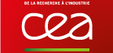
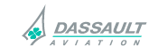
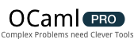

The current development of OCaml is lead by Inria. Support by the community is available on the OCaml mailing list. Commercial support is provided by the OCamlPro company.
The OCaml Consortium federates the design and development of the OCaml language and its programming environment. The Consortium allow its members to demonstrate their interest in the OCaml language and express their support to its development. Moreover, they benefit of a specific license.
To become a member necessitates a contribution that can be as low as 3000€ for a minimal support to OCaml. For more effective support, contributions can be of 10000€ or higher. Membership is important not only for the development of OCaml, its promotion and its dissemination, but also for its continuity.
|  |  | |
|
||
|
|
|
|
|
 |
In order to fully understand the Consortium membership, it is advised to read the OCaml Consortium membership agreement and its appendices, which is online as PDF. Extra information about VAT are given in this information sheet.
If you agree with the Consortium clauses, you will then be able to fill in and send this adhesion form. Your request will be examined by an Inria representative, who will then officially send two copies of the agreement for signature.
Once the agreement is signed by a representative of your company/institution and by a representative of Inria, an invoice will be sent to you.
Commercial support can be provided by OCamlPro. OCamlPro provides different services, from simple support to advanced development in OCaml, and training and consulting.